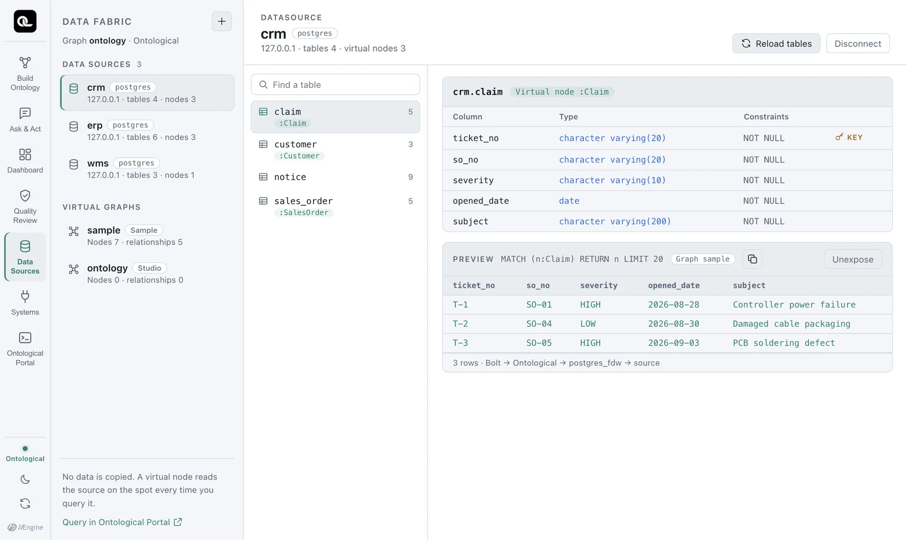
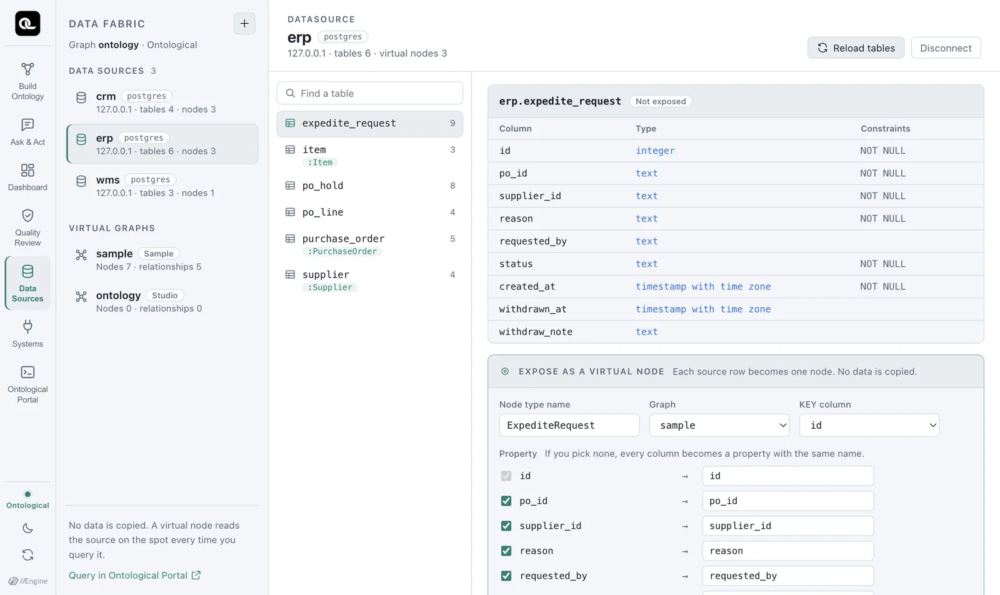

Connect a source database, explore its tables and columns, and preview its data without copying it. Along the way you will learn how the data fabric works.
What is a data fabric?#
A company's data is spread across many databases. Usually it is copied (ETL) into a data warehouse, gathered in one place and analyzed there. A copy lags behind the original, permissions must be managed in two places, and whenever the original changes you have to copy it again.
A data fabric leaves the data in the source and reads it each time you query. Ontological DB defines virtual nodes so you can query source tables as if they were graph nodes. It uses only definitions of nodes and relationships; the data itself is not copied.
| Copy (ETL) | Data fabric | |
|---|---|---|
| Where the data is | A copy in the warehouse | Stays in the source |
| Freshness | As of the last load | As of the moment you query |
| Permissions | Two places: source and copy | One place: the source |
| Writes | Writing to the copy leaves the source unchanged | Virtual nodes are read-only; writes go to the source system |
Opening the Data Sources tab#
On Home, click the Data Sources card.

| Area | Contents |
|---|---|
| Top left: Data Sources | Connected source databases. Three sample sources are already connected: crm, erp and wms. |
| Bottom left: Virtual graphs | Graphs that hold virtual nodes. The sample uses sample. Stored graphs created by builds (such as ontology) are listed too, but they have no virtual nodes, so they show “Nodes 0 · relationships 0”. |
| Middle | Tables of the selected data source. A table with a green label such as :Claim is already exposed as a virtual node. |
| Right | The table's columns, types and constraints, plus a 20-row preview if it is a virtual node |
The line under the preview, 3 rows · Bolt → Ontological → postgres_fdw → source, is the key point of this chapter. These rows were not copied anywhere. They were just read from the source table crm.claim.
Exploring tables#
Click erp on the left to see ERP's 6 tables.

Here is a summary of the sample source tables.
| Data source | Table | Key | Main columns | Virtual node |
|---|---|---|---|---|
erp |
supplier |
supplier_id |
name, country, tier | Supplier |
item |
item_id |
name, safety_stock | Item |
|
purchase_order |
po_id |
supplier_id, order_date, amount_usd, status | PurchaseOrder |
|
po_line |
po_line_id |
po_id, item_id, qty | (none — you create it in Chapter 6) | |
po_hold, expedite_request |
Records left by actions (holds, expedite requests) | |||
wms |
shipment |
shipment_no |
ref_po_no, vendor_code, ship_status, delay_days, eta, priority | Shipment |
stock_daily |
(date, item, warehouse) | on_hand_qty | ||
priority_change |
Records left by actions (priority change history) | |||
crm |
customer |
cust_no |
name, country | Customer |
sales_order |
so_no |
cust_no, sku_code, qty, status | SalesOrder |
|
claim |
ticket_no |
so_no, severity, opened_date, subject | Claim |
|
notice |
Records left by actions (customer notices) |
Column names differ from system to system
The same “purchase order number” is po_id in ERP and ref_po_no in WMS. The same “item” is item_id in ERP and sku_code in CRM. This is common in real companies too, and linking these differences with relationships is the ontology's job.
Connecting a new data source#
Click ＋ at the top left to open the connection form. When you pick an engine, the fields that engine needs appear.
| Engine | Required values | Notes |
|---|---|---|
| PostgreSQL | Host, port, database, schema, user, password | macOS, Windows |
| MySQL / MariaDB | Host, port, database, user, password | macOS (Apple Silicon, Intel) |
| Oracle | Host, port, service name, owner schema, user, password | macOS (Apple Silicon, Intel) |
| SQL Server | Host, port, database, schema (default dbo), user, password | macOS (Apple Silicon, Intel) |
Data source names may use only lowercase English letters, digits and underscores. The source can be on the same PC, the company network or the internet, as long as you can connect to it. We recommend a read-only account for the source.
You can check the statement before it runs. For example, connecting PostgreSQL actually runs the following statement (on screen, the password shows only as '••••').
CREATE DATASOURCE mydb WITH ENGINE = 'postgres',
PARAMETERS = {host: '10.0.0.5', port: 5432, database: 'sales', schema: 'public',
user: 'reader', password: '••••'}
Try connecting your course database
If you have a PostgreSQL or MySQL database from a class, try connecting it. The moment you connect, its table list and column types come into the catalog. Not a single row of data is copied.
The statements behind the screen#
The Data Sources tab does all of its work with Ontological DB fabric statements. You can see what ran under Executed statement at the bottom of the screen. You can also type the same statements directly in the Portal.
| Statement | What it does |
|---|---|
SHOW DATASOURCES |
Lists the connected data sources |
SHOW TABLES FROM erp |
Lists a data source's tables and whether each is exposed as a virtual node |
SHOW COLUMNS FROM erp.po_line |
Columns, types, nullability, keys |
REFRESH DATASOURCE erp |
Reads the source again when it has new tables |
DROP DATASOURCE erp |
Disconnects (the engine refuses if a virtual node uses it) |
Running SHOW TABLES FROM erp in the Portal gives this result.
| table | columns | virtual_node |
|---|---|---|
| erp.expedite_request | 9 | |
| erp.item | 3 | Item |
| erp.po_hold | 8 | |
| erp.po_line | 4 | |
| erp.purchase_order | 5 | PurchaseOrder |
| erp.supplier | 4 | Supplier |
Check yourself
- In the Data Sources tab, open the
shipmenttable inwmsand find the shipment with the largest delay (delay_days) in the preview. - How many rows does the
crm.claimpreview show? Where are those rows stored? - Guess the column names that
SHOW COLUMNS FROM wms.shipmentwill return, then check in the Portal.
Show answers
SHP-03(9 days, CUSTOMS_HOLD — held at customs).- 3 rows (T-1, T-2, T-3). They are not in Ontological DB but in the
claimtable of the sourcecrmschema. The preview was read from the source at the moment you queried. shipment_no,ref_po_no,vendor_code,ship_status,delay_days,eta,priority. (priorityis the column that actions change.)